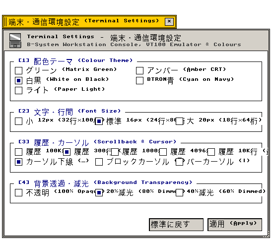

端末設定 (Terminal)
カラーパレット · フォント寸法 · スクロールバックバッファ · カーソル様式
端末コンソール配色テーマ、フォントサイズ、スクロールバック履歴、透過率の設定仕様
"Terminal emulator rendering parameters: ANSI color matrices, raster font sizes, and scrollback ring buffers."
← 設定フォルダ (Settings Folder Index)
端末設定（Terminal） — GTermコンソール端末のカラーテーマ、ビットマップフォント寸法、スクロールバック履歴行数、カーソル描画様式、背景透過減光率を管理する設定アプレット。
"Terminal emulator configuration: ANSI 16-color palettes, proportional font metrics, scrollback ring buffers, and alpha dimming factors."
画面プレビュー (Screen Preview)

実機描画フレームバッファより自動抽出された透過端末環境設定ウィンドウ (Native Headless GDEV Capture)
概要 (Overview)
GTermコンソール端末のカラーテーマ、ビットマップフォント寸法、スクロールバック履歴行数、カーソル描画様式、背景透過減光率を管理する設定アプレット。
"Terminal emulator configuration: ANSI 16-color palettes, proportional font metrics, scrollback ring buffers, and alpha dimming factors."
基本操作仕様 (Operational Specifications)：
・[標準 (Default)]：工場出荷時の初期設定に復元します。
・[適用 (Apply)]：設定変更を確定し、システム状態へ反映します。
・[閉じる (Close)]：設定ウィンドウを破棄します（cls_wnd()）。
1. カラーテーマとフォント寸法 (Color Themes & Font Metrics)
端末画面の文字色・背景色パレットおよび12/16/20pxビットマップフォントの設定仕様。
"ANSI terminal color schemes and monospace raster font dimension parameters."
| 設定項目・機能名 |
動作概要と視覚仕様 (Functional Specification) |
技術仕様・幾何学構造 (Technical / C99 Definition) |
Matrix Green / Amber CRT / White / Cyan / Light
端末カラーテーマ (5種類) |
グリーンCRT（Matrix Green）、アンバーCRT、白黒、BTRON青、ライト用紙から単一選択します。 |
設定値: TERM_THEME_GREEN .. LIGHT
C99: TerminalConfig.theme |
Font Sizing: 12px / 16px / 20px
フォント表示寸法 |
小 12px (32行×100桁)、標準 16px (24行×80桁)、大 20px (18行×64桁) から端末フォントを選択します。 |
設定値: TERM_FONT_12, 16, 20
C99: TerminalConfig.font_size |
2. スクロール履歴、カーソル様式、透過率 (Scrollback, Cursor & Transparency)
リングバッファスクロールバック行数、カーソル形状、ウィンドウ背景透過率の設定仕様。
"Scrollback line capacity, hardware cursor shapes, and window surface opacity levels."
| 設定項目・機能名 |
動作概要と視覚仕様 (Functional Specification) |
技術仕様・幾何学構造 (Technical / C99 Definition) |
Scrollback Lines: 100 / 300 / 1000
スクロールバック履歴行数 |
端末の出力履歴行数を100行、300行（標準）、1000行から選択します。 |
バッファ: TerminalConfig.scrollback_lines
実装: src/apps/gterm.c |
Cursor Style: Underline / Block / Bar
カーソル描画様式 |
下線型 (_)、ブロック型 (█)、バー型 (|) から点滅カーソル形状を選択します。 |
設定値: TERM_CURSOR_UNDERLINE .. BAR
C99: TerminalConfig.cursor_style |
Window Transparency: Opaque / 80% / 60%
背景透過減光率 |
不透明 (100%)、20%減光 (80%)、40%減光 (60%) から端末背景の透過度を設定します。 |
設定値: TERM_TRANSPARENCY_OPAQUE .. 60
C99: TerminalConfig.transparency |
3. 全設定パラメータ仕様一覧 (Configuration Parameter Specifications)
端末設定が提供するすべての設定要素、初期値、およびC99内部シンボル。
"Comprehensive parameter specification table: indexing all UI widget states, factory defaults, and underlying C99 data symbols."
| セクション |
パラメータ名 / UI要素 |
標準値 (Default) |
設定値 / 選択肢 |
C99 内部変数・シンボル |
| [1] テーマ・フォント |
Terminal Theme |
Matrix Green (0) |
5種類ラジオ選択 |
TerminalConfig.theme |
| [1] テーマ・フォント |
Font Size |
標準 16px (1) |
12px / 16px / 20px |
TerminalConfig.font_size |
| [2] 履歴・カーソル |
Scrollback Lines |
300行 (標準) |
100 / 300 / 1000行 |
TerminalConfig.scrollback_lines |
| [2] 履歴・カーソル |
Cursor Style |
アンダーライン (0) |
下線 / ブロック / バー |
TerminalConfig.cursor_style |
| [2] 履歴・カーソル |
Transparency |
不透明 (100%) |
100% / 80% / 60% |
TerminalConfig.transparency |
| アクション制御 |
[ 標準に戻す ] |
— |
初期設定へ復元 |
cfg->theme = 0, font = 1, etc. |
| アクション制御 |
[ 適用 (Apply) ] |
— |
変更確定と端末再描画 |
gterm_apply_config() |
関連コンポーネント (Related Components)